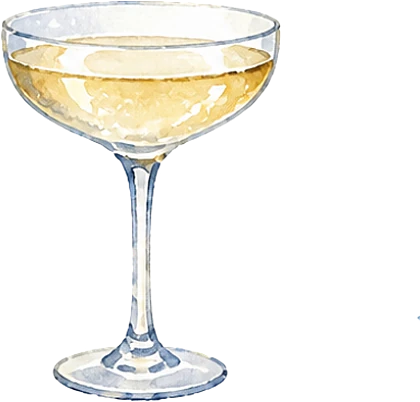
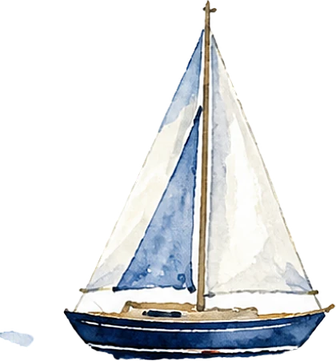
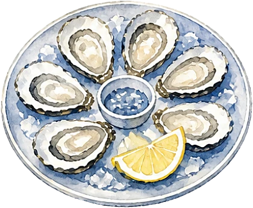
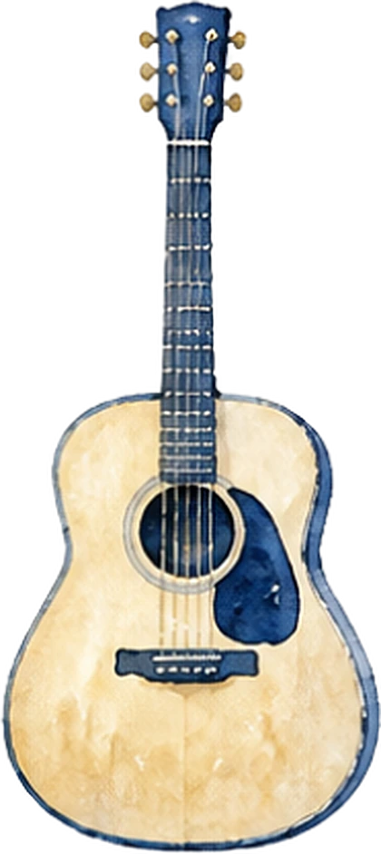
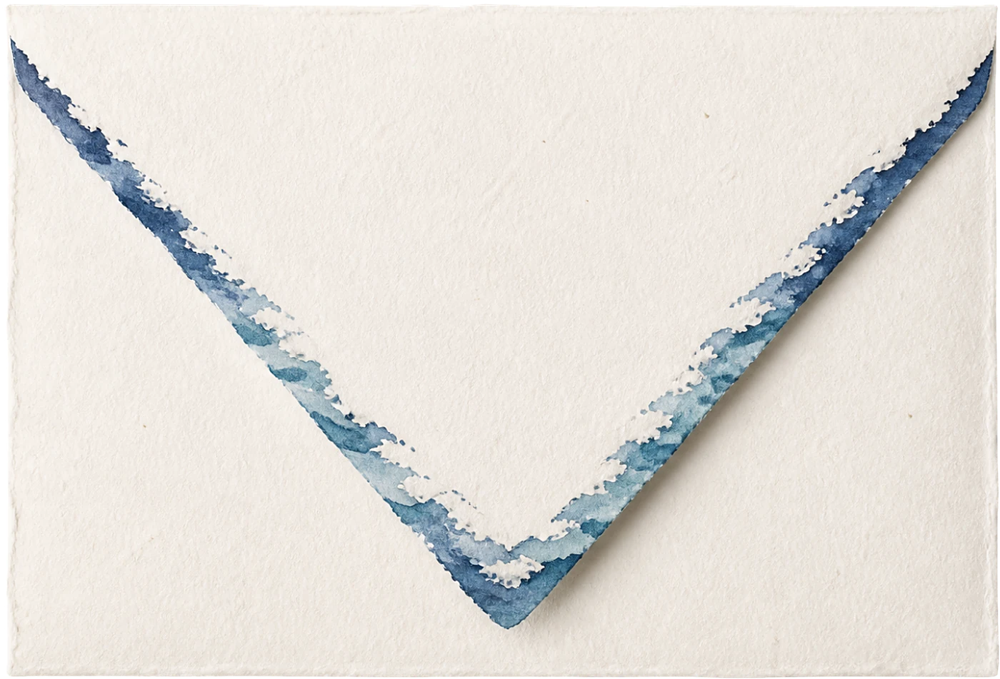
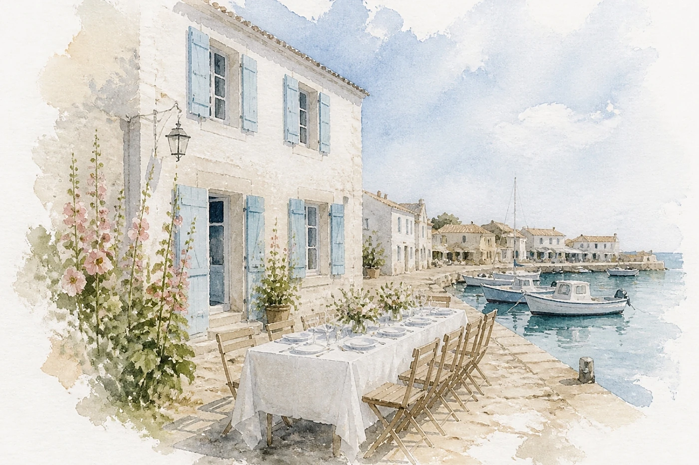
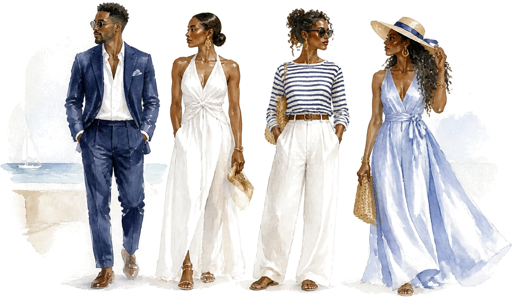

Le programme
Samedi 10 juillet 2027
- 16 h 30Échange des alliances

17 h 30Champagne sur le quai
18 h 30Balade en voilier
20 h 00Dîner de la mer
22 h 00Guitare et première danse- 23 h 30Gâteau des mariés

Le lieu

Maison du Port
Saint-Martin-de-Ré
Tenue
Bord de mer chic
Lin, marinière, blanc et bleu marine. Le dîner a lieu sur le quai : prévoyez une petite laine pour le soir.

Il reste
--jours
--heures
--minutes
Votre réponse
Merci de répondre avant le 1er juin 2027.
Je serai présent·eJe ne pourrai pas venir